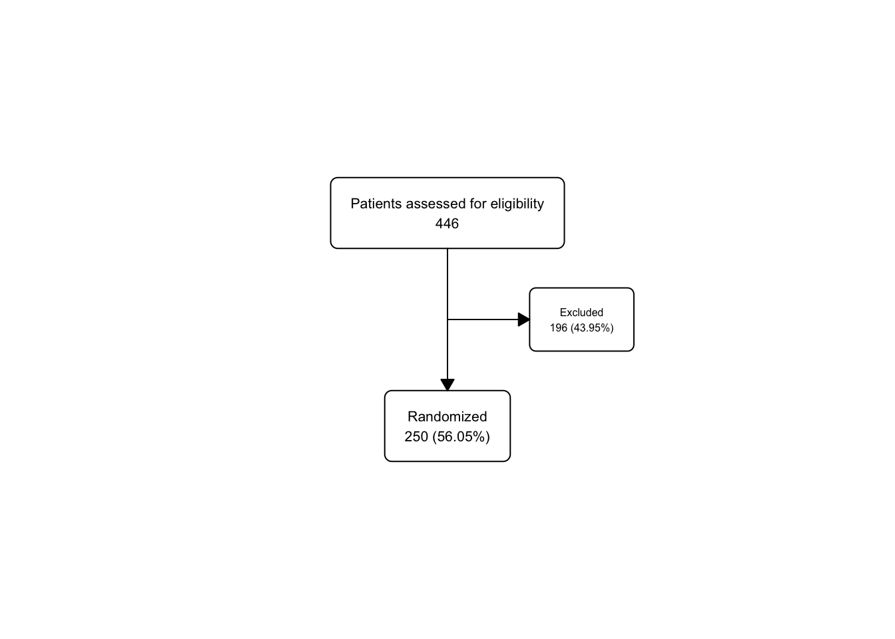
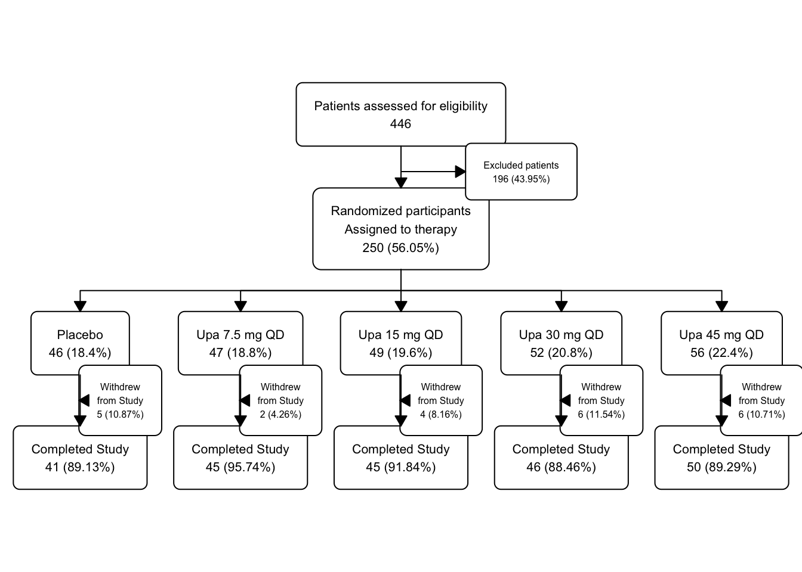

Chapter 46 ‘fc_view(statin_fc6, what =’fc’)’,
46.1 A More Complicated Study
Now we will build the consort diagram for a more complicated study of Upadacitinib in ulcerative colitis. We will not use the actual data from the study, but a rough approximation that is good enough to make the assorted boxes in the CONSORT diagram work.
46.2 Example
We will build a 2nd example dataset for the {flowchart} package. This dataset will be from the phase 3 Upa study for UC. The data will be simulated to match the structure of the data from the Upa study to reproduce the CONSORT diagram. The original paper (and CONSORT diagram) can be found here. Click on the link and scroll (way) down to Figure 1 to see the original CONSORT diagram. We are going to build a nice version of this.
Our goal is to replicate Figure 1.
Dataset construction will be as follows:
- 446 participants will be simulated and assessed for eligibility
- 196 participants will be excluded
- 250 participants will be randomized to the study
- 46-56 participants will be randomly assigned to the 5 treatment groups
- 2-6 from each arm will discontinue treatment
- 41-50 from each arm will complete the study
We will use the data provided in Figure 1, and will not use any patient identifying data (as this is all made up data).
The variables in the dataset should include:
- id: participant identifier
- inclusion_crit: inclusion criteria met (Yes/No)
- exclusion_crit: exclusion criteria met (Yes/No) Other reasons for exclusion, including:
- withdrew_consent: withdrew consent (Yes/No)
- lost_to_follow_up: lost to follow-up (Yes/No)
- other_reasons: other reasons for exclusion (Yes/No)
- group (treatment group)
- completed: completed the study (Yes/No) Reasons for non-completion, including:
- adverse_event (Yes/No)
- lack_of_efficacy (Yes/No)
- other_reasons (Yes/No)
- itt: intention to treat (Yes/No)
- reason_itt: reason for not being included in the intention to treat analysis
- pp: per protocol (Yes/No)
- reason_pp: reason for not being included in the per protocol analysis
# Simulate the data
tibble::tibble(
id = 1:446,
inclusion_crit = rep("Yes", 446),
exclusion_crit = c(rep("No", 274), rep("Yes", 172)),
withdrew_consent = c(rep("No", 257), rep("Yes", 17), rep(NA, 172)),
lost_to_follow_up = c(rep("No", 255), rep("Yes", 2), rep(NA, 189)),
other_reasons = c(rep("No", 250), rep("Yes", 5), rep(NA, 191)),
group = c(rep("Placebo", 46), rep("Upa 7.5 mg QD", 47), rep("Upa 15 mg QD", 49), rep("Upa 30 mg QD", 52), rep("Upa 45 mg QD", 56), rep(NA, 196)),
completed = c(rep("Yes", 41), rep("No", 5),
rep("Yes", 45), rep("No", 2),
rep("Yes", 45), rep("No", 4),
rep("Yes", 46), rep("No", 6),
rep("Yes", 50), rep("No", 6),
rep(NA, 196)),
adverse_event = c(rep("No", 41), rep("Yes", 3), rep("No", 2),
rep("No", 45), rep("Yes", 1), rep("No", 1),
rep("No", 45), rep("Yes", 2), rep("No", 2),
rep("No", 46), rep("Yes", 4), rep("No", 2),
rep("No", 50), rep("Yes", 4), rep("No", 2),
rep(NA, 196)),
lack_of_efficacy = c(
rep("No", 44), rep("Yes", 2),
rep("No", 46), rep("Yes", 1),
rep("No", 47), rep("Yes", 1), rep("No", 1),
rep("No", 50), rep("Yes", 1), rep("No", 1),
rep("No", 54), rep("Yes", 2),
rep(NA, 196)),
other_reason_withdraw = c(
rep("No", 46),
rep("No", 47),
rep("No", 48), rep("Yes", 1),
rep("No", 51), rep("Yes", 1),
rep("No", 56),
rep(NA, 196)),
itt = c(rep("Yes", 250), rep("No", 196)),
reason_itt = c(rep(NA, 250), rep("No response", 196)),
pp = c(rep("Yes", 250), rep("No", 196)),
reason_pp = c(rep(NA, 250), rep("No response", 196))
) -> upa
upa |>
mutate(group = factor(group, ordered = TRUE,
levels = c("Placebo", "Upa 7.5 mg QD", "Upa 15 mg QD", "Upa 30 mg QD", "Upa 45 mg QD"))) -> upa2Now ww will create the flowchart using the {flowchart} package. We will start with the opening box.
## List of 2
## $ data: tibble [446 × 15] (S3: tbl_df/tbl/data.frame)
## $ fc : tibble [1 × 17] (S3: tbl_df/tbl/data.frame)
## - attr(*, "class")= chr "fc"
You can go to the Environment pane to find upa_fc. Click on it to reveal the list object that contains 2 objects: (1) the data and (2) the flowchart (fc). Click on the blue arrows next to these to reveal the contents. The fc tibble object is a tibble of details on how to draw the boxes, what to put inside them, and how to format each box and its contents. The data object is the original data frame that was used to create the flowchart.
You can also see these in the Console pane by running the following code in the Console - upa_fc$data and upa_fc$fc. Or in the Viewer pane by running View(upa_fc$data) and View(upa_fc$fc).
The fc tibble guides the flowchart drawn by fc_draw. The arguments to fc_draw allow you to adjust box corners, arrow formatting, and a title for the whole object, but the details of how and where to draw the boxes is determined by data in the fc tibble.
46.3 Branching
Now we can add branching to the flowchart to document the excluded consenters. We will use fc_filter to create a branch for those who were not eligible.
upa_fc2 <- upa2 |>
as_fc(label = "Patients assessed for eligibility") |>
fc_filter(!is.na(group), label = "Randomized", show_exc = TRUE)
fc_draw(upa_fc2)
Take a peek at the underlying flowchart structure of upa_fc2
## # A tibble: 3 × 17
## id x y n N perc text type group
## <int> <dbl> <dbl> <int> <int> <chr> <chr> <chr> <lgl>
## 1 1 0.5 0.667 446 446 100 "Patients… init NA
## 2 2 0.5 0.333 250 446 56.05 "Randomiz… filt… NA
## 3 3 0.65 0.5 196 446 43.95 "Excluded… excl… NA
## # ℹ 8 more variables: just <chr>, text_color <chr>,
## # text_fs <dbl>, text_fface <dbl>, text_ffamily <lgl>,
## # text_padding <dbl>, bg_fill <chr>, border_color <chr>Just for practice, let’s use fc_modify to push the excluded box (id == 3) further to the right (and leave all the other boxes in the same x dimension), and use a bigger font size for the text in only this box, leaving the other boxes with their default text_fs.
upa_fc2 |>
fc_modify(
~ . |>
dplyr::mutate(
x = ifelse(id == 3, 0.77, x),
text_fs = ifelse(id == 3, 9, text_fs)
)) |>
fc_draw()
46.4 Splitting into Groups (Treatment Arms)
upa2 |>
as_fc(label = "Patients assessed for eligibility") |>
fc_filter(!is.na(group), label = "Randomized participants\nAssigned to therapy", show_exc = TRUE, label_exc = "Excluded patients" ) |>
fc_split(group) |>
str(max.level = 1)## List of 2
## $ data: gropd_df [250 × 15] (S3: grouped_df/tbl_df/tbl/data.frame)
## ..- attr(*, "groups")= tibble [5 × 2] (S3: tbl_df/tbl/data.frame)
## .. ..- attr(*, ".drop")= logi FALSE
## $ fc : tibble [8 × 17] (S3: tbl_df/tbl/data.frame)
## - attr(*, "class")= chr "fc"Then we can start to split the branches to treatment arms (groups).
upa_fc2 <- upa2 |>
as_fc(label = "Patients assessed for eligibility") |>
fc_filter(!is.na(group), label = "Randomized participants\nAssigned to therapy", show_exc = TRUE, label_exc = "Excluded patients" ) |>
fc_split(group)
fc_draw(upa_fc2)
Take a peek at the underlying flowchart structure of upa_fc2
## # A tibble: 8 × 17
## id x y n N perc text type group
## <int> <dbl> <dbl> <int> <int> <chr> <chr> <chr> <chr>
## 1 1 0.5 0.75 446 446 100 "Patients… init <NA>
## 2 2 0.5 0.5 250 446 56.05 "Randomiz… filt… <NA>
## 3 3 0.65 0.625 196 446 43.95 "Excluded… excl… <NA>
## 4 4 0.1 0.25 46 250 18.4 "Placebo\… split Plac…
## 5 5 0.3 0.25 47 250 18.8 "Upa 7.5 … split Upa …
## 6 6 0.5 0.25 49 250 19.6 "Upa 15 m… split Upa …
## 7 7 0.7 0.25 52 250 20.8 "Upa 30 m… split Upa …
## 8 8 0.9 0.25 56 250 22.4 "Upa 45 m… split Upa …
## # ℹ 8 more variables: just <chr>, text_color <chr>,
## # text_fs <dbl>, text_fface <dbl>, text_ffamily <lgl>,
## # text_padding <dbl>, bg_fill <chr>, border_color <chr>Let’s experiment by modifying the background color of placebo to gray, and the increasing doses of Upa to graded shades of dodgerblue.
upa_fc2 |>
fc_modify(
~ . |>
dplyr::mutate(
bg_fill = ifelse(id == 4, "gray", bg_fill),
bg_fill = ifelse(id == 5, "dodgerblue1", bg_fill),
bg_fill = ifelse(id == 6, "dodgerblue2", bg_fill),
bg_fill = ifelse(id == 7, "dodgerblue3", bg_fill),
bg_fill = ifelse(id == 8, "dodgerblue4", bg_fill)
)) |>
fc_draw()46.5 Filtering for Completers
Now let’s filter for completers but break this up so that we can also print out the fc object.
upa2 |>
as_fc(label = "Patients assessed for eligibility") |>
fc_filter(!is.na(group), label = "Randomized participants\nAssigned to therapy", show_exc = TRUE, label_exc = "Excluded patients" ) |>
fc_split(group) |>
fc_filter(completed == "Yes", label = "Completed Study", show_exc = TRUE, label_exc = "Withdrew\nfrom Study") -> upa_fc4
upa_fc4$fc## # A tibble: 18 × 17
## id x y n N perc text type group
## <int> <dbl> <dbl> <int> <int> <chr> <chr> <chr> <chr>
## 1 1 0.5 0.8 446 446 100 "Patient… init <NA>
## 2 2 0.5 0.6 250 446 56.05 "Randomi… filt… <NA>
## 3 3 0.65 0.7 196 446 43.95 "Exclude… excl… <NA>
## 4 4 0.1 0.4 46 250 18.4 "Placebo… split Plac…
## 5 5 0.3 0.4 47 250 18.8 "Upa 7.5… split Upa …
## 6 6 0.5 0.4 49 250 19.6 "Upa 15 … split Upa …
## 7 7 0.7 0.4 52 250 20.8 "Upa 30 … split Upa …
## 8 8 0.9 0.4 56 250 22.4 "Upa 45 … split Upa …
## 9 9 0.1 0.2 41 46 89.13 "Complet… filt… Plac…
## 10 10 0.15 0.3 5 46 10.87 "Withdre… excl… Plac…
## 11 11 0.5 0.2 45 49 91.84 "Complet… filt… Upa …
## 12 12 0.55 0.3 4 49 8.16 "Withdre… excl… Upa …
## 13 13 0.7 0.2 46 52 88.46 "Complet… filt… Upa …
## 14 14 0.75 0.3 6 52 11.54 "Withdre… excl… Upa …
## 15 15 0.9 0.2 50 56 89.29 "Complet… filt… Upa …
## 16 16 0.95 0.3 6 56 10.71 "Withdre… excl… Upa …
## 17 17 0.3 0.2 45 47 95.74 "Complet… filt… Upa …
## 18 18 0.35 0.3 2 47 4.26 "Withdre… excl… Upa …
## # ℹ 8 more variables: just <chr>, text_color <chr>,
## # text_fs <dbl>, text_fface <dbl>, text_ffamily <lgl>,
## # text_padding <dbl>, bg_fill <chr>, border_color <chr>
Now the flowchart is getting a bit crowded in the Plots windowpane. You may want to zoom it (click on the zoom button at the top left of the Plots window) to see a less crowded version.
Let’s check the structure of the fc object again.
## # A tibble: 18 × 17
## id x y n N perc text type group
## <int> <dbl> <dbl> <int> <int> <chr> <chr> <chr> <chr>
## 1 1 0.5 0.8 446 446 100 "Patient… init <NA>
## 2 2 0.5 0.6 250 446 56.05 "Randomi… filt… <NA>
## 3 3 0.65 0.7 196 446 43.95 "Exclude… excl… <NA>
## 4 4 0.1 0.4 46 250 18.4 "Placebo… split Plac…
## 5 5 0.3 0.4 47 250 18.8 "Upa 7.5… split Upa …
## 6 6 0.5 0.4 49 250 19.6 "Upa 15 … split Upa …
## 7 7 0.7 0.4 52 250 20.8 "Upa 30 … split Upa …
## 8 8 0.9 0.4 56 250 22.4 "Upa 45 … split Upa …
## 9 9 0.1 0.2 41 46 89.13 "Complet… filt… Plac…
## 10 10 0.15 0.3 5 46 10.87 "Withdre… excl… Plac…
## 11 11 0.5 0.2 45 49 91.84 "Complet… filt… Upa …
## 12 12 0.55 0.3 4 49 8.16 "Withdre… excl… Upa …
## 13 13 0.7 0.2 46 52 88.46 "Complet… filt… Upa …
## 14 14 0.75 0.3 6 52 11.54 "Withdre… excl… Upa …
## 15 15 0.9 0.2 50 56 89.29 "Complet… filt… Upa …
## 16 16 0.95 0.3 6 56 10.71 "Withdre… excl… Upa …
## 17 17 0.3 0.2 45 47 95.74 "Complet… filt… Upa …
## 18 18 0.35 0.3 2 47 4.26 "Withdre… excl… Upa …
## # ℹ 8 more variables: just <chr>, text_color <chr>,
## # text_fs <dbl>, text_fface <dbl>, text_ffamily <lgl>,
## # text_padding <dbl>, bg_fill <chr>, border_color <chr>Take a moment to practice with fc_modify. Make changes that you would like to see in the flowchart to any of the 18 boxes. Maybe the border color, or try a different number for the text_fface. Check the reference items on the package webpage here.
46.7 To do -
- Provide more detailed labels for the exclusions - use ‘withdrew consent’, ‘lost to follow-up’, ‘other reasons’
- Add the discontinued reasons to the flowchart for each group -‘adverse event’, ‘lack of efficacy’, ‘other reasons’
46.8 Modify exclusions for more detailed labels
Let’s create the multiline text for the exclusions before randomization.
text_exc <- paste0(
sum(upa$exclusion_crit == "Yes",
upa$withdrew_consent == "Yes",
upa$lost_to_follow_up == "Yes",
upa$other_reasons == "Yes", na.rm = TRUE),
" patients excluded\n",
" ",
sum(upa$exclusion_crit == "Yes", na.rm = TRUE),
" met exclusion criteria\n",
" ",
sum(upa$withdrew_consent == "Yes", na.rm = TRUE),
" withdrew their consent\n",
" ",
sum(upa$lost_to_follow_up == "Yes", na.rm = TRUE),
" were lost to follow up\n",
" ",
sum(upa$other_reasons == "Yes", na.rm = TRUE),
" were excluded for other reasons"
)
text_exc## [1] "196 patients excluded\n 172 met exclusion criteria\n 17 withdrew their consent\n 2 were lost to follow up\n 5 were excluded for other reasons"Now let’s add this multiline text for exclusions to the flowchart.
upa2 |>
as_fc(label = "Patients assessed for eligibility") |>
fc_filter(!is.na(group), label = "Randomized participants\nAssigned to therapy", show_exc = TRUE, label_exc = "Excluded patients" ) |>
fc_modify( #modifying only box 3 - exclusions
~ . |>
dplyr::mutate(
text = ifelse(id ==3, text_exc, text),
just = ifelse(id == 3, "left", "center"),
x = ifelse(id == 3, x + 0.11, x)
)
) |>
fc_split(group) |>
fc_filter(completed == "Yes", label = "Completed Study", show_exc = TRUE, label_exc = "Withdrew\nfrom Study") |>
fc_draw()
46.9 Problems
- Don’t know the ids of the Withdrew from Study boxes? how would I find these out? Is there a way to look at the fc table? Is it 10,12,14,16,18?
- the fc portion of the list seems to have only one row? why is that? Shouldn’t it have rows for each id of each box? How do I see the full table?
- how do I control order of arms in fc_split - these should be in order by dose from placebo on left to the highest dose on right. Are these alphbetical ordered? Should I make group into an ordered factor to address this?
- For a SMART study (sequential multiple assignment randomized trial) - can I use fc_split to split by the first randomization and then again for the second randomization? How would I do this? Would I need to create a new group2 variable for this second randomization?
- When the withdrawal reasons re multiple, and the box is tall, is there an option to push the completed boxes lower down the page so that there is enough space for the withdrawal reasons?
46.10 Next step
let’s add the withdrawal reasons to the flowchart for each group -‘adverse event’, ‘lack of efficacy’, ‘other reasons’
Create the multiline text for the withdrawal reasons.
upa_p <- upa2 |>
filter(group == "Placebo")
text_wd <- paste0(
sum(upa_p$completed == "No", na.rm = TRUE),
" patients excluded\n",
" ",
sum(upa_p$adverse_event == "Yes", na.rm = TRUE),
" adverse event\n",
" ",
sum(upa_p$lack_of_efficacy == "Yes", na.rm = TRUE),
" lack of efficacy\n",
" ",
sum(upa_p$other_reason_withdraw == "Yes", na.rm = TRUE),
" other"
)
text_wd## [1] "5 patients excluded\n 3 adverse event\n 2 lack of efficacy\n 0 other"Now for Upa 7.5 mg QD
upa_7 <- upa2 |>
filter(group == "Upa 7.5 mg QD")
text_wd2 <- paste0(
sum(upa_7$completed == "No", na.rm = TRUE),
" patients excluded\n",
" ",
sum(upa_7$adverse_event == "Yes", na.rm = TRUE),
" adverse event\n",
" ",
sum(upa_7$lack_of_efficacy == "Yes", na.rm = TRUE),
" lack of efficacy\n",
" ",
sum(upa_7$other_reason_withdraw == "Yes", na.rm = TRUE),
" other"
)
text_wd2## [1] "2 patients excluded\n 1 adverse event\n 1 lack of efficacy\n 0 other"Now for Upa 15 mg QD
upa_15 <- upa2 |>
filter(group == "Upa 15 mg QD")
text_wd3 <- paste0(
sum(upa_15$completed == "No", na.rm = TRUE),
" patients excluded\n",
" ",
sum(upa_15$adverse_event == "Yes", na.rm = TRUE),
" adverse event\n",
" ",
sum(upa_15$lack_of_efficacy == "Yes", na.rm = TRUE),
" lack of efficacy\n",
" ",
sum(upa_15$other_reason_withdraw == "Yes", na.rm = TRUE),
" other"
)
text_wd3## [1] "4 patients excluded\n 2 adverse event\n 1 lack of efficacy\n 1 other"Now for Upa 30 mg QD
upa_30 <- upa2 |>
filter(group == "Upa 30 mg QD")
text_wd4 <- paste0(
sum(upa_30$completed == "No", na.rm = TRUE),
" patients excluded\n",
" ",
sum(upa_30$adverse_event == "Yes", na.rm = TRUE),
" adverse event\n",
" ",
sum(upa_30$lack_of_efficacy == "Yes", na.rm = TRUE),
" lack of efficacy\n",
" ",
sum(upa_30$other_reason_withdraw == "Yes", na.rm = TRUE),
" other"
)
text_wd4## [1] "6 patients excluded\n 4 adverse event\n 1 lack of efficacy\n 1 other"Now for Upa 45 mg QD
upa_45 <- upa2 |>
filter(group == "Upa 45 mg QD")
text_wd5 <- paste0(
sum(upa_45$completed == "No", na.rm = TRUE),
" patients excluded\n",
" ",
sum(upa_45$adverse_event == "Yes", na.rm = TRUE),
" adverse event\n",
" ",
sum(upa_45$lack_of_efficacy == "Yes", na.rm = TRUE),
" lack of efficacy\n",
" ",
sum(upa_45$other_reason_withdraw == "Yes", na.rm = TRUE),
" other"
)
text_wd5## [1] "6 patients excluded\n 4 adverse event\n 2 lack of efficacy\n 0 other"46.11 Attempt to add withdrawal reasons
it looks like these are even numbers from 10 to 18
upa2 |>
as_fc(label = "Patients assessed for eligibility") |>
fc_filter(!is.na(group), label = "Randomized participants\nAssigned to therapy", show_exc = TRUE, label_exc = "Excluded patients" ) |>
fc_modify( #modifying only box 3 - exclusions
~ . |>
dplyr::mutate(
text = ifelse(id ==3, text_exc, text),
just = ifelse(id == 3, "left", just),
x = ifelse(id == 3, x + 0.11, x)
)
) |>
fc_split(group) |>
fc_filter(completed == "Yes", label = "Completed Study", show_exc = TRUE, label_exc = "Withdrew\nfrom Study") |>
fc_modify(# moving group boxes leftward
~ . |>
dplyr::mutate(
x = ifelse(id %in% c(4:9, 9,11,13,15,17), x-0.02, x)
)
) |>
fc_modify(# moving withdraw boxes leftward, down, resize font, align left
~ . |>
dplyr::mutate(
x = ifelse(id %in% c(10,12,14,16,18), x - 0.01, x),
y = ifelse(id %in% c(10,12,14,16,18), y-0.02, y),
text_fs = ifelse(id %in% c(10,12,14,16,18), 8, text_fs),
just = ifelse(id %in% c(10,12,14,16,18), "left", just)
)
) |>
fc_modify( # moving completers down
~ . |>
dplyr::mutate(
y = ifelse(id %in% c(9,11,13,15,17), y-0.05, y)
)
) |>
fc_modify( # replacing text for one withdraw box
~ . |>
dplyr::mutate(
text = ifelse(id == 10, text_wd, text),
text = ifelse(id == 18, text_wd2, text),
text = ifelse(id == 12, text_wd3, text),
text = ifelse(id == 14, text_wd4, text),
text = ifelse(id == 16, text_wd5, text)
)
) -> upa_fc6
upa_fc6## $data
## # A tibble: 227 × 15
## # Groups: group [5]
## id inclusion_crit exclusion_crit withdrew_consent
## <int> <chr> <chr> <chr>
## 1 1 Yes No No
## 2 2 Yes No No
## 3 3 Yes No No
## 4 4 Yes No No
## 5 5 Yes No No
## 6 6 Yes No No
## 7 7 Yes No No
## 8 8 Yes No No
## 9 9 Yes No No
## 10 10 Yes No No
## # ℹ 217 more rows
## # ℹ 11 more variables: lost_to_follow_up <chr>,
## # other_reasons <chr>, group <ord>, completed <chr>,
## # adverse_event <chr>, lack_of_efficacy <chr>,
## # other_reason_withdraw <chr>, itt <chr>,
## # reason_itt <chr>, pp <chr>, reason_pp <chr>
##
## $fc
## # A tibble: 18 × 17
## id x y n N perc text type group
## <int> <dbl> <dbl> <int> <int> <chr> <chr> <chr> <chr>
## 1 1 0.5 0.8 446 446 100 "Patient… init <NA>
## 2 2 0.5 0.6 250 446 56.05 "Randomi… filt… <NA>
## 3 3 0.76 0.7 196 446 43.95 "196 pat… excl… <NA>
## 4 4 0.08 0.4 46 250 18.4 "Placebo… split Plac…
## 5 5 0.28 0.4 47 250 18.8 "Upa 7.5… split Upa …
## 6 6 0.48 0.4 49 250 19.6 "Upa 15 … split Upa …
## 7 7 0.68 0.4 52 250 20.8 "Upa 30 … split Upa …
## 8 8 0.88 0.4 56 250 22.4 "Upa 45 … split Upa …
## 9 9 0.08 0.15 41 46 89.13 "Complet… filt… Plac…
## 10 10 0.14 0.28 5 46 10.87 "5 patie… excl… Plac…
## 11 11 0.48 0.15 45 49 91.84 "Complet… filt… Upa …
## 12 12 0.54 0.28 4 49 8.16 "4 patie… excl… Upa …
## 13 13 0.68 0.15 46 52 88.46 "Complet… filt… Upa …
## 14 14 0.74 0.28 6 52 11.54 "6 patie… excl… Upa …
## 15 15 0.88 0.15 50 56 89.29 "Complet… filt… Upa …
## 16 16 0.94 0.28 6 56 10.71 "6 patie… excl… Upa …
## 17 17 0.28 0.15 45 47 95.74 "Complet… filt… Upa …
## 18 18 0.34 0.28 2 47 4.26 "2 patie… excl… Upa …
## # ℹ 8 more variables: just <chr>, text_color <chr>,
## # text_fs <dbl>, text_fface <dbl>, text_ffamily <lgl>,
## # text_padding <dbl>, bg_fill <chr>, border_color <chr>
##
## attr(,"class")
## [1] "fc"Now let’s draw the flowchart.
46.12 Your Turn
Let’s try to build a flowchart for a new study on your own, using a new dataset.
Here is the dataset you will use, from a hypothetical study of treatment of fatigue comparing 4 arms, Modafinil + Placebo, Buproprion + Placebo, Modafinil + Buproprion, and Placebo. Fatigue is measured with a 0-20 score. All patients enter with at least moderate fatigue (>13), and are treated for 8 weeks. Fatigue on the 0-20 scale is measured at week 0 and week 8.
Copy and run the code below to build the fatigue dataset of 141 consented participants, of whom 100 complete the study.
# build base of completers, non-withdrawers
set.seed(121)
n <- 100
fatigue <- tibble(
id = 1:n,
group = sample(c("Modafinil + Placebo", "Buproprion + Placebo", "Modafinil + Buproprion", "Placebo"), n, replace = TRUE),
fatigue_0 = sample(14:20, n, replace = TRUE),
fatigue_8 = fatigue_0 - sample(1:5, n, replace = TRUE)) |>
mutate(fatigue_8 = case_when(
group =="Modafinil + Placebo" ~ fatigue_8 - 2,
group =="Buproprion + Placebo" ~ fatigue_8 - 1,
group =="Modafinil + Buproprion" ~ fatigue_8 - 4,
group =="Placebo" ~ fatigue_8 + 1)) |>
mutate(inclusion_crit = "Yes",
exclusion_crit = "No",
withdrew_consent = "No",
lost_to_follow_up = "No",
other_reasons = "No",
completed = "Yes",
adverse_event = "No",
lack_of_efficacy = "No",
other_reason_withdraw = "No",
itt = "Yes",
reason_itt = NA,
pp = "Yes",
reason_pp = NA)
# add excluded,then withdrawers for each group}
n = 20
f2 <- fatigue |>
slice(81:100) |>
mutate(
exclusion_crit = rep(c("Yes", "No"), c(15,5)),
withdrew_consent = rep(c( "No", "Yes", "No"), c(15,3, 2)),
lost_to_follow_up = rep(c("No", "Yes", "No"), c(18, 1, 1)),
other_reason_exclude = rep(c("No", "Yes"), c(19, 1)),
group = NA,
fatigue_8 = NA,
adverse_event = NA,
lack_of_efficacy = NA,
other_reason_withdraw = NA,
itt = "No",
pp = "No",
completed = "No")
n=3
fatigue_b <- fatigue |>
arrange(group) |>
slice(1:3) |>
mutate(
fatigue_0 = sample(14:20, n, replace = TRUE),
fatigue_8 = NA,
completed = "No",
adverse_event = rep(c("Yes", "No"), c(2,1)),
lack_of_efficacy = rep(c( "No", "Yes"), c(2,1)))
n=5
fatigue_m <- fatigue |>
arrange(group) |>
slice(56:60) |>
mutate(
fatigue_0 = sample(14:20, n, replace = TRUE),
fatigue_8 = NA,
completed = "No",
adverse_event = rep(c("Yes", "No"), c(3,2)),
lack_of_efficacy = rep(c( "No", "Yes", "No"), c(3,1,1)),
other_reason_withdraw = rep(c("No", "Yes"), c(4,1)))
n=5
fatigue_combo <- fatigue |>
arrange(group) |>
slice(27:31) |>
mutate(
fatigue_0 = sample(14:20, n, replace = TRUE),
fatigue_8 = NA,
completed = "No",
adverse_event = rep(c("Yes", "No"), c(3,2)),
lack_of_efficacy = rep(c( "No", "Yes", "No"), c(3,1,1)),
other_reason_withdraw = rep(c("No", "Yes"), c(4,1)))
n=8
fatigue_p <- fatigue |>
arrange(group) |>
slice(84:91) |>
mutate(
fatigue_0 = sample(14:20, n, replace = TRUE),
fatigue_8 = NA,
completed = "No",
adverse_event = rep(c("Yes", "No"), c(2,6)),
lack_of_efficacy = rep(c( "No", "Yes", "No"), c(2,5,1)),
other_reason_withdraw = rep(c("No", "Yes"), c(7,1)))
fatigue <- bind_rows(fatigue, f2, fatigue_b, fatigue_m, fatigue_combo, fatigue_p)
fatigue$id[101:141] <- 101:141Now build a flowchart for this study. You can use the fatigue dataset to build the flowchart.
Do this step by step, and don’t worry if you get stuck. We will provide the solution in the next section.
In order, build:
- a box for the assessed population
- a box for the randomized sample, splitting off the excluded consenters
- a box for each arm
- a box for the completers in each arm
- create the text for the excluded consenters
- add the text to the excluded box
- a box for the non-completers in each arm (with reasons for non-completion)
- a box for the assessed population
## List of 2
## $ data: tibble [141 × 18] (S3: tbl_df/tbl/data.frame)
## $ fc : tibble [1 × 17] (S3: tbl_df/tbl/data.frame)
## - attr(*, "class")= chr "fc"- add branching to the flowchart for exclusions
Now we can add branching to the flowchart to document the exclusions. We use group = NA to identify the excluded consenters.
fatigue |>
as_fc(label = "Patients assessed for eligibility") |>
fc_filter(!is.na(group), label = "Randomized", show_exc = TRUE) |>
fc_draw()
- a box for each arm
Now we can add a branch for each arm. We will use fc_split by group to get a branch for each group.
fatigue |>
as_fc(label = "Patients assessed for eligibility") |>
fc_filter(!is.na(group), label = "Randomized participants\nAssigned to therapy", show_exc = TRUE, label_exc = "Excluded patients" ) |>
fc_split(group) |>
fc_draw()
- a box for the completers in each arm
Now let’s filter for completers but break this up so that we can also print out the fc object.
fatigue |>
as_fc(label = "Patients assessed for eligibility") |>
fc_filter(!is.na(group), label = "Randomized participants\nAssigned to therapy", show_exc = TRUE, label_exc = "Excluded patients" ) |>
fc_split(group) |>
fc_filter(completed == "Yes", label = "Completed Study", show_exc = TRUE, label_exc = "Withdrew\nfrom Study") -> fatigue_fc4
fatigue_fc4$fc## # A tibble: 15 × 17
## id x y n N perc text type group
## <int> <dbl> <dbl> <int> <int> <chr> <chr> <chr> <chr>
## 1 1 0.5 0.8 141 141 100 "Patient… init <NA>
## 2 2 0.5 0.6 121 141 85.82 "Randomi… filt… <NA>
## 3 3 0.65 0.7 20 141 14.18 "Exclude… excl… <NA>
## 4 4 0.125 0.4 33 121 27.27 "Bupropr… split Bupr…
## 5 5 0.375 0.4 26 121 21.49 "Modafin… split Moda…
## 6 6 0.625 0.4 30 121 24.79 "Modafin… split Moda…
## 7 7 0.875 0.4 32 121 26.45 "Placebo… split Plac…
## 8 8 0.125 0.2 28 33 84.85 "Complet… filt… Bupr…
## 9 9 0.188 0.3 5 33 15.15 "Withdre… excl… Bupr…
## 10 10 0.375 0.2 23 26 88.46 "Complet… filt… Moda…
## 11 11 0.438 0.3 3 26 11.54 "Withdre… excl… Moda…
## 12 12 0.625 0.2 25 30 83.33 "Complet… filt… Moda…
## 13 13 0.688 0.3 5 30 16.67 "Withdre… excl… Moda…
## 14 14 0.875 0.2 24 32 75 "Complet… filt… Plac…
## 15 15 0.938 0.3 8 32 25 "Withdre… excl… Plac…
## # ℹ 8 more variables: just <chr>, text_color <chr>,
## # text_fs <dbl>, text_fface <dbl>, text_ffamily <lgl>,
## # text_padding <dbl>, bg_fill <chr>, border_color <chr>- create the text for the excluded consenters
Let’s create the multiline text for the exclusions before randomization.
text_exc <- paste0(
sum(fatigue$exclusion_crit == "Yes",
fatigue$withdrew_consent == "Yes",
fatigue$lost_to_follow_up == "Yes",
fatigue$other_reasons == "Yes", na.rm = TRUE),
" patients excluded\n",
" ",
sum(fatigue$exclusion_crit == "Yes", na.rm = TRUE),
" met exclusion criteria\n",
" ",
sum(fatigue$withdrew_consent == "Yes", na.rm = TRUE),
" withdrew their consent\n",
" ",
sum(fatigue$lost_to_follow_up == "Yes", na.rm = TRUE),
" were lost to follow up\n",
" ",
sum(fatigue$other_reasons == "Yes", na.rm = TRUE),
" were excluded for other reasons"
)
text_exc## [1] "19 patients excluded\n 15 met exclusion criteria\n 3 withdrew their consent\n 1 were lost to follow up\n 0 were excluded for other reasons"- add the text to the excluded box
Now let’s add this multiline text for exclusions to the flowchart.
fatigue |>
as_fc(label = "Patients assessed for eligibility") |>
fc_filter(!is.na(group), label = "Randomized participants\nAssigned to therapy", show_exc = TRUE, label_exc = "Excluded patients" ) |>
fc_modify( #modifying only box 3 - exclusions
~ . |>
dplyr::mutate(
text = ifelse(id ==3, text_exc, text),
just = ifelse(id == 3, "left", "center"),
x = ifelse(id == 3, x + 0.11, x)
)
) |>
fc_split(group) |>
fc_filter(completed == "Yes", label = "Completed Study", show_exc = TRUE, label_exc = "Withdrew\nfrom Study") |>
fc_draw()
let’s add the withdrawal reasons to the flowchart for each group -‘adverse event’, ‘lack of efficacy’, ‘other reasons’
Create the multiline text for the withdrawal reasons. We will do this separately for each group/arm.
fatigue_p_wd <- fatigue |>
filter(group == "Placebo")
text_wd <- paste0(
sum(fatigue_p_wd$completed == "No", na.rm = TRUE),
" patients excluded\n",
" ",
sum(fatigue_p_wd$adverse_event == "Yes", na.rm = TRUE),
" adverse event\n",
" ",
sum(fatigue_p_wd$lack_of_efficacy == "Yes", na.rm = TRUE),
" lack of efficacy\n",
" ",
sum(fatigue_p_wd$other_reason_withdraw == "Yes", na.rm = TRUE),
" other"
)
text_wd## [1] "8 patients excluded\n 2 adverse event\n 5 lack of efficacy\n 1 other"Now for Modafinil + Placebo
fatigue_mp_wd <- fatigue |>
filter(group == "Modafinil + Placebo")
text_wd2 <- paste0(
sum(fatigue_mp_wd$completed == "No", na.rm = TRUE),
" patients excluded\n",
" ",
sum(fatigue_mp_wd$adverse_event == "Yes", na.rm = TRUE),
" adverse event\n",
" ",
sum(fatigue_mp_wd$lack_of_efficacy == "Yes", na.rm = TRUE),
" lack of efficacy\n",
" ",
sum(fatigue_mp_wd$other_reason_withdraw == "Yes", na.rm = TRUE),
" other"
)
text_wd2## [1] "5 patients excluded\n 3 adverse event\n 1 lack of efficacy\n 1 other"Now for Buproprion + Placebo
fatigue_bp_wd <- fatigue |>
filter(group == "Buproprion + Placebo")
text_wd3 <- paste0(
sum(fatigue_bp_wd$completed == "No", na.rm = TRUE),
" patients excluded\n",
" ",
sum(fatigue_bp_wd$adverse_event == "Yes", na.rm = TRUE),
" adverse event\n",
" ",
sum(fatigue_bp_wd$lack_of_efficacy == "Yes", na.rm = TRUE),
" lack of efficacy\n",
" ",
sum(fatigue_bp_wd$other_reason_withdraw == "Yes", na.rm = TRUE),
" other"
)
text_wd3## [1] "5 patients excluded\n 4 adverse event\n 1 lack of efficacy\n 0 other"Now for Modafinil + Bupropion
fatigue_mb_wd <- fatigue |>
filter(group == "Modafinil + Buproprion")
text_wd4 <- paste0(
sum(fatigue_mb_wd$completed == "No", na.rm = TRUE),
" patients excluded\n",
" ",
sum(fatigue_mb_wd$adverse_event == "Yes", na.rm = TRUE),
" adverse event\n",
" ",
sum(fatigue_mb_wd$lack_of_efficacy == "Yes", na.rm = TRUE),
" lack of efficacy\n",
" ",
sum(fatigue_mb_wd$other_reason_withdraw == "Yes", na.rm = TRUE),
" other"
)
text_wd4## [1] "3 patients excluded\n 1 adverse event\n 1 lack of efficacy\n 1 other"46.13 Attempt to add withdrawal reasons
46.13.3 check which object is which with fc_view
it looks like these are even numbers from 10 to 18
## # A tibble: 15 × 7
## id x y n N perc text
## <int> <dbl> <dbl> <int> <int> <chr> <chr>
## 1 1 0.5 0.8 141 141 100 "Patients assessed f…
## 2 2 0.5 0.6 121 141 85.82 "Randomized particip…
## 3 3 0.65 0.7 20 141 14.18 "Excluded patients\n…
## 4 4 0.125 0.4 33 121 27.27 "Buproprion + Placeb…
## 5 5 0.375 0.4 26 121 21.49 "Modafinil + Bupropr…
## 6 6 0.625 0.4 30 121 24.79 "Modafinil + Placebo…
## 7 7 0.875 0.4 32 121 26.45 "Placebo\n32 (26.45%…
## 8 8 0.125 0.2 28 33 84.85 "Completed Study\n28…
## 9 9 0.188 0.3 5 33 15.15 "Withdrew\nfrom Stud…
## 10 10 0.375 0.2 23 26 88.46 "Completed Study\n23…
## 11 11 0.438 0.3 3 26 11.54 "Withdrew\nfrom Stud…
## 12 12 0.625 0.2 25 30 83.33 "Completed Study\n25…
## 13 13 0.688 0.3 5 30 16.67 "Withdrew\nfrom Stud…
## 14 14 0.875 0.2 24 32 75 "Completed Study\n24…
## 15 15 0.938 0.3 8 32 25 "Withdrew\nfrom Stud…fatigue |>
as_fc(label = "Patients assessed for eligibility") |>
fc_filter(!is.na(group), label = "Randomized participants\nAssigned to therapy", show_exc = TRUE, label_exc = "Excluded patients" ) |>
fc_modify( #modifying only box 3 - exclusions
~ . |>
dplyr::mutate(
text = ifelse(id ==3, text_exc, text),
just = ifelse(id == 3, "left", just),
x = ifelse(id == 3, x + 0.11, x)
)
) |>
fc_split(group) |>
fc_filter(completed == "Yes", label = "Completed Study", show_exc = TRUE, label_exc = "Withdrew\nfrom Study") |>
fc_modify(# moving group boxes leftward
~ . |>
dplyr::mutate(
x = ifelse(id %in% c(4:7, 8,10,12,14), x-0.02, x)
)
) |>
fc_modify(# moving withdraw boxes leftward, down, resize font, align left
~ . |>
dplyr::mutate(
x = ifelse(id %in% c(9,11,13,15), x - 0.01, x),
y = ifelse(id %in% c(9,11,13,15), y-0.02, y),
text_fs = ifelse(id %in% c(9,11,13,15), 8, text_fs),
just = ifelse(id %in% c(9,11,13,15), "left", just)
)
) |>
fc_modify( # moving completers down
~ . |>
dplyr::mutate(
y = ifelse(id %in% c(8,10,12,14), y-0.05, y)
)
) |>
fc_modify( # replacing text for one withdraw box
~ . |>
dplyr::mutate(
text = ifelse(id == 15, text_wd, text),
text = ifelse(id == 9, text_wd2, text),
text = ifelse(id == 11, text_wd3, text),
text = ifelse(id == 13, text_wd4, text)
)
) -> fatigue_fc6
fatigue_fc6## $data
## # A tibble: 100 × 18
## # Groups: group [4]
## id group fatigue_0 fatigue_8 inclusion_crit
## <int> <fct> <int> <dbl> <chr>
## 1 1 Placebo 15 14 Yes
## 2 2 Placebo 17 17 Yes
## 3 3 Placebo 18 18 Yes
## 4 4 Modafinil + Bup… 19 14 Yes
## 5 5 Placebo 15 15 Yes
## 6 6 Modafinil + Pla… 17 14 Yes
## 7 7 Modafinil + Bup… 19 13 Yes
## 8 8 Modafinil + Pla… 18 15 Yes
## 9 9 Modafinil + Bup… 16 10 Yes
## 10 10 Modafinil + Bup… 18 13 Yes
## # ℹ 90 more rows
## # ℹ 13 more variables: exclusion_crit <chr>,
## # withdrew_consent <chr>, lost_to_follow_up <chr>,
## # other_reasons <chr>, completed <chr>,
## # adverse_event <chr>, lack_of_efficacy <chr>,
## # other_reason_withdraw <chr>, itt <chr>,
## # reason_itt <lgl>, pp <chr>, reason_pp <lgl>, …
##
## $fc
## # A tibble: 15 × 17
## id x y n N perc text type group
## <int> <dbl> <dbl> <int> <int> <chr> <chr> <chr> <chr>
## 1 1 0.5 0.8 141 141 100 "Patient… init <NA>
## 2 2 0.5 0.6 121 141 85.82 "Randomi… filt… <NA>
## 3 3 0.76 0.7 20 141 14.18 "19 pati… excl… <NA>
## 4 4 0.105 0.4 33 121 27.27 "Bupropr… split Bupr…
## 5 5 0.355 0.4 26 121 21.49 "Modafin… split Moda…
## 6 6 0.605 0.4 30 121 24.79 "Modafin… split Moda…
## 7 7 0.855 0.4 32 121 26.45 "Placebo… split Plac…
## 8 8 0.105 0.15 28 33 84.85 "Complet… filt… Bupr…
## 9 9 0.178 0.28 5 33 15.15 "5 patie… excl… Bupr…
## 10 10 0.355 0.15 23 26 88.46 "Complet… filt… Moda…
## 11 11 0.428 0.28 3 26 11.54 "5 patie… excl… Moda…
## 12 12 0.605 0.15 25 30 83.33 "Complet… filt… Moda…
## 13 13 0.678 0.28 5 30 16.67 "3 patie… excl… Moda…
## 14 14 0.855 0.15 24 32 75 "Complet… filt… Plac…
## 15 15 0.928 0.28 8 32 25 "8 patie… excl… Plac…
## # ℹ 8 more variables: just <chr>, text_color <chr>,
## # text_fs <dbl>, text_fface <dbl>, text_ffamily <lgl>,
## # text_padding <dbl>, bg_fill <chr>, border_color <chr>
##
## attr(,"class")
## [1] "fc"Now let’s draw the flowchart.